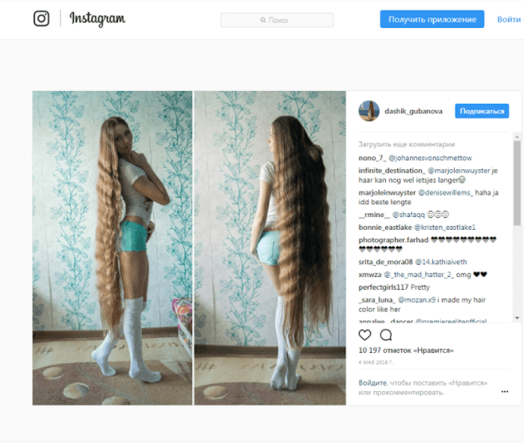

"Рапунцель" из России покорила британские СМИ:
Сразу несколько крупных британских таблоида - The Mirror, Huffington Post, Daily Mail - посвятили статьи русской красавице, коса которой помогла ей стать "Живой Рапунцель". Именно так назвали британские издания молодую Дарью Губанову из Барнаула. Это генетика или какое-то чудесное средство для роста волос?
Молодая русская красавица перестала состригать свои волосы еще в 2003 году, решив в итоге, что сделает это только в 2018 году - тогда, когда волосы будут доставать до самого пола: «Этот пост для тех, кто говорит, что я должна пожертвовать свои волосы для париков… В 14 лет я отрезала волосы и пожертвовала их на создание париков. На данный момент я их отращиваю. Моя цель состоит в том, чтобы вырастить их до пят» - написала Дарья.
Главная причина отращивания косы крылась в "банальном споре": «Когда мне было 14 лет, я остригла свою косу, которая была чуть выше колен. Два года стриглась довольно коротко и даже начала обесцвечивать волосы. А потом подруга вспомнила мою длинную косу и сказала, что я больше никогда не смогу отрастить такие же волосы. С этого все и началось!». И результат впечатляющий! Но неужели просто не стричь волосы достаточно?! Многие пытались состригать только секущиеся кончики, не сушить волосы феном, но у кого, в итоге, они отрасли до пят? На самом деле нехватка витаминов, минералов, плохое кровообращение и недостаточное питание кожи головы, а также вездесущий стресс не дадут отрастить длинную и толстую косу или просто густые локоны каждому желающему. Но Дарья на заявление только махнула рукой: “Вы думаете у меня они отрасли до такой длины только благодаря моему желанию?! Конечно нет! Так только у сказочной Рапунцель бывает!”
Британские СМИ, возможно, разыскали ее по страничке в инстаграме, на которую на данный момент подписано уже порядка 100 тысяч пользователей, большинство из которых наверняка подкупила ее красота и похожесть на мультипликационного персонажа: миниатюрная красавица с шикарными волосами - у кого угодно сердце екнет. Но “иностранцам” Даша секрет того, как она отрастила волосы, не раскрыла! Только российским читателям!
Нормализовать кровообращение, укрепить волосяные луковицы и волосяной стержень, чтобы максимально ускорить рост волос Даше, как она призналась, помог отечественный масляный комплекс Head&hair на основе известных своими активными свойствами натуральных масел: репейного, касторового, зародышей пшеницы, оливкового, жожоба и эфирного масла мандарина.
Если вы спросите: сколько баночек Head&hair Дарья тратит, то ответ - сейчас ни одной. Она использовала его первый месяц для активации роста: наносила на корни, массировала, одевала шапочку и на 30 минут забывала, пока готовила ужин, потом смывала обычным шампунем - всё. Сейчас уже ничего не нужно. Комплекс сделал своё дело!
Как только у Дарьи наконец-то появилась желаемая длина волос, она начала придумывать для себя множество новых причесок и образов, которые и демонстрирует на страничке своей социальной сети. Смотря на неё, нельзя не согласиться с утверждением, что волосы - действительно величайшая красота и достояние!
Не сомневаюсь, что мыть, сушить и в целом ухаживать за своими волосами - дело непростое, но это того стоит, что и доказал интерес британской, а потом уже и нашей, отечественной, прессы.
Таким образом, взорвать интернет и стать мега популярным можно просто: например, использовать Head&hair и не стричься!
ХОЧУ УЗНАТЬ ПОДРОБНЕЕ